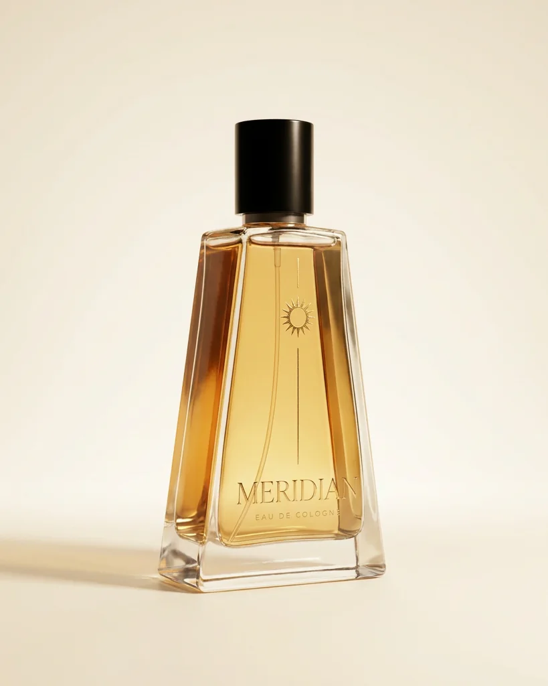
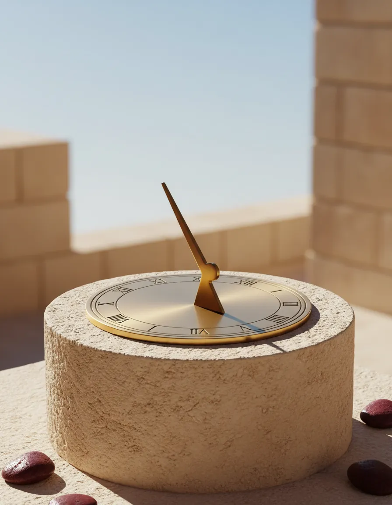
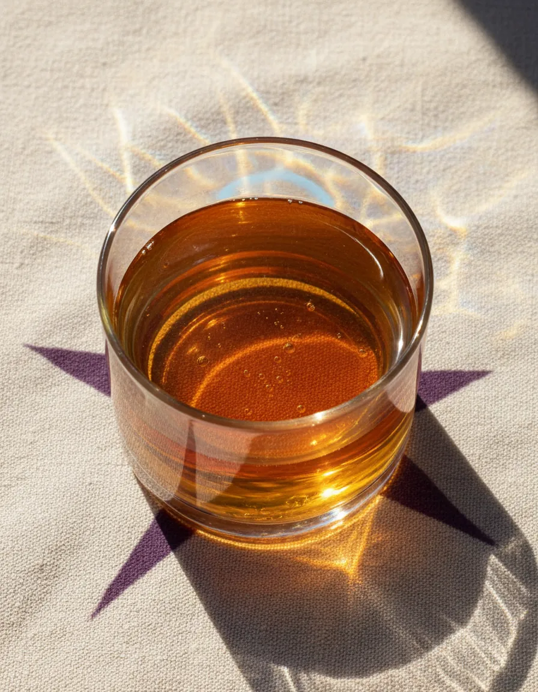
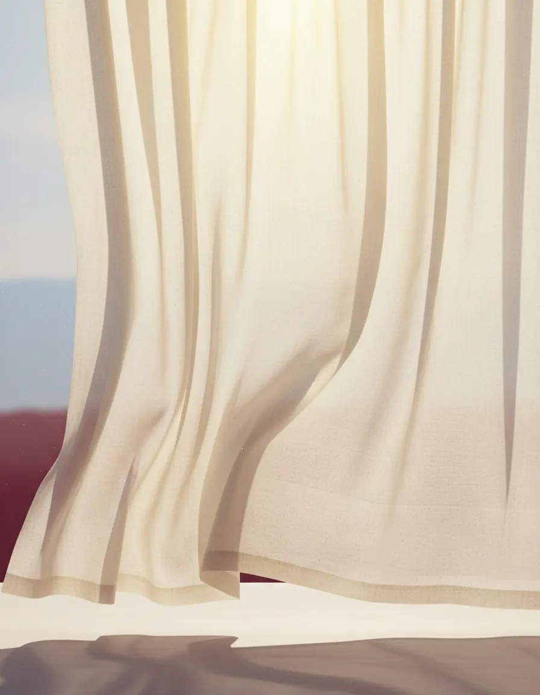
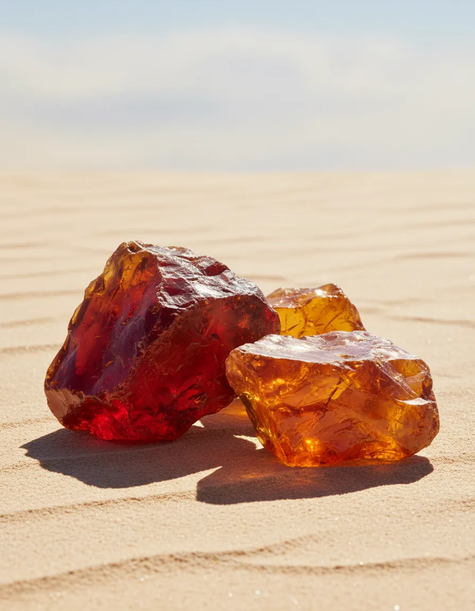
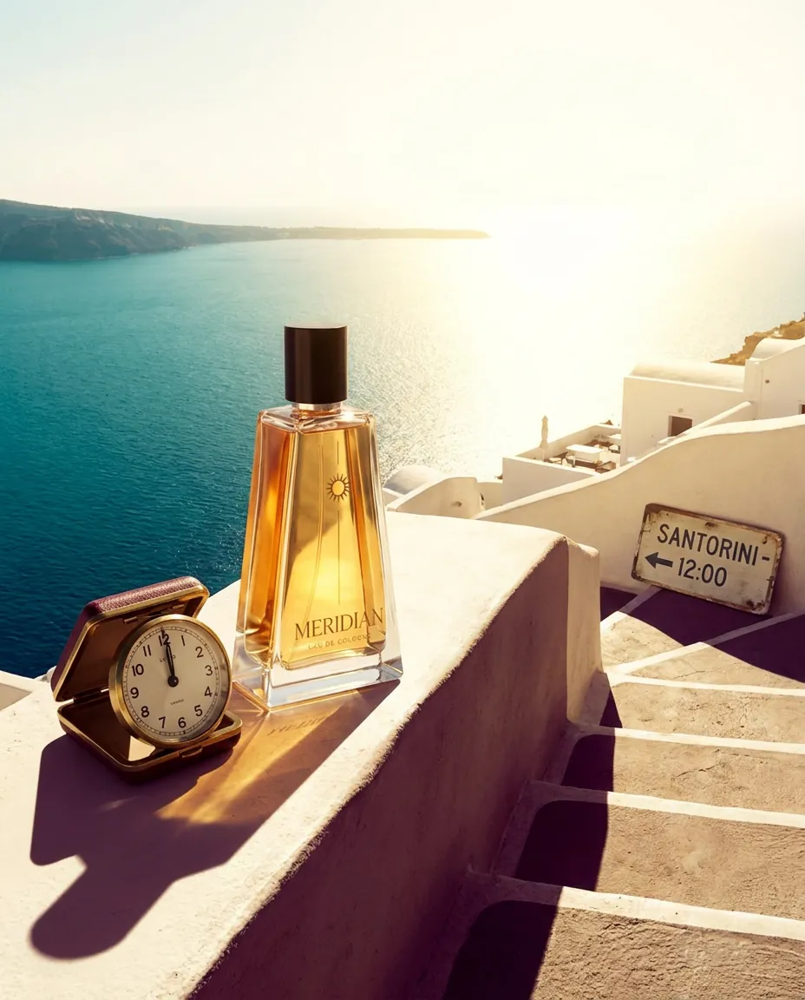
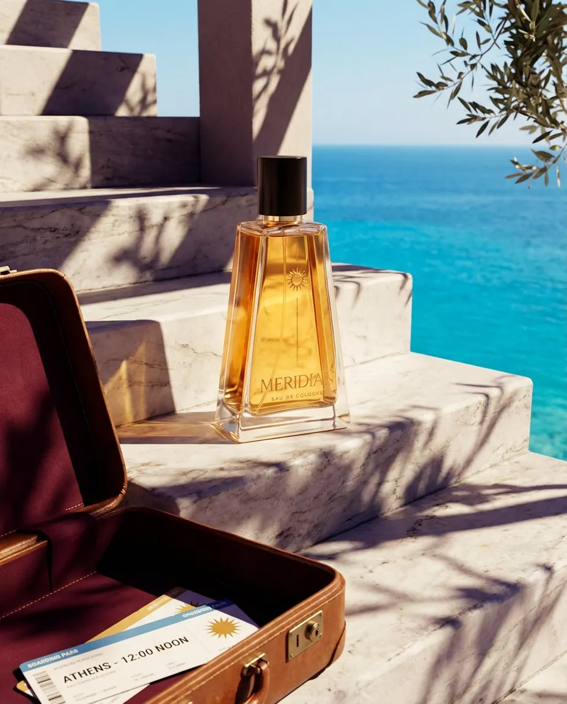
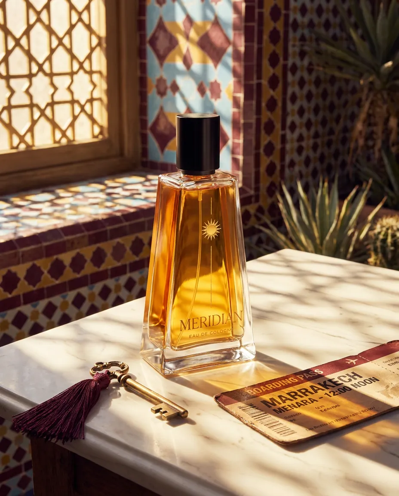
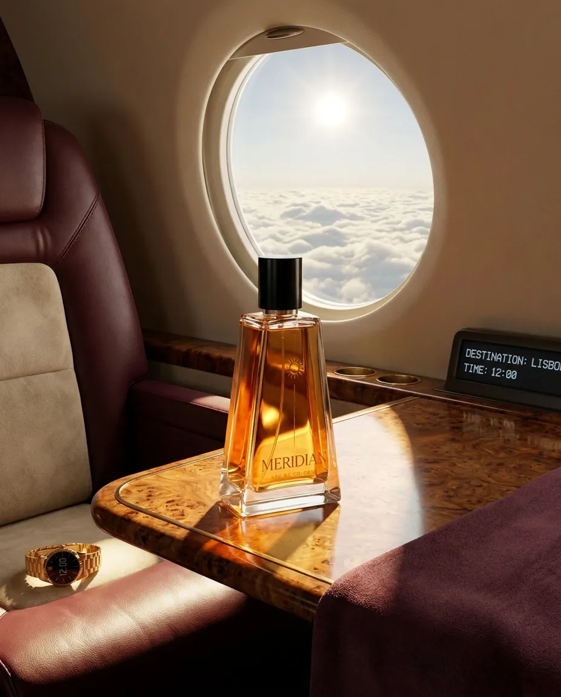
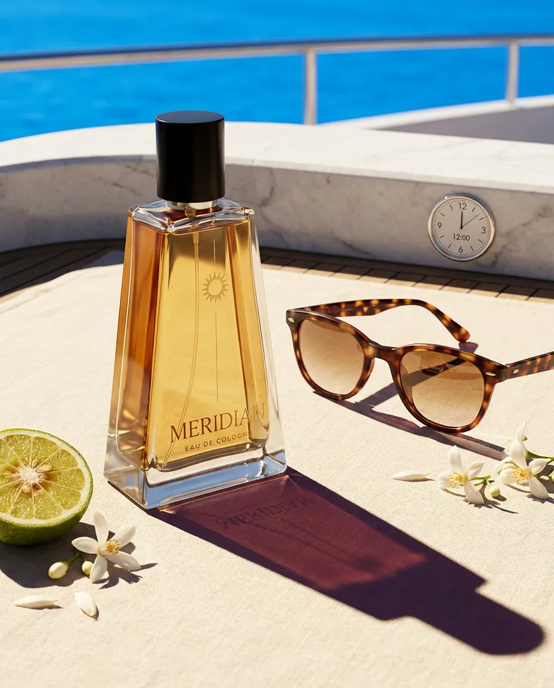

Noot 01Vertrek
Bergamot
Fris, groen en een tikje bitter. Zon op een schil, vlak voor het instappen.
Nieuw · Eau de cologne
Meridian is gebotteld middaglicht voor wie reist. Bergamot bij vertrek, neroli onderweg, amber bij aankomst. Eén spray en het is twaalf uur, waar je ook landt.

Hoofdstuk I · 11:59
Er is een moment waarop de zon recht boven je staat. Schaduwen worden kort, de wereld wordt even stil. Wij hebben dat moment in een fles gegoten.
Meridian is een frisse eau de cologne voor wie onderweg is. Eén spray en het is twaalf uur, waar je ook landt.


Hoofdstuk II · De geur
Drie noten, één reis. Van fris bij vertrek tot warm bij aankomst.
Noot 01Vertrek
Fris, groen en een tikje bitter. Zon op een schil, vlak voor het instappen.

Noot 02Onderweg
Licht en wit als een linnen gordijn in de wind. Een open raam boven de wolken.

Noot 03Aankomst
Warm als woestijnzand. De noot die blijft als je allang geland bent.
Hoofdstuk III · Aankomst 12:00

Boarding passMRD 1200
BRUJTR
Witte trappen, korte schaduwen en de zon recht boven je hoofd.

Boarding passMRD 1200
BRUATH
Marmer dat warm is van de zon. Handbagage: één middag.

Boarding passMRD 1200
BRURAK
Zelliges, een koele binnenplaats en neroli in de lucht.

Boarding passMRD 1200
BRULIS
Boven de wolken is het altijd middag.

Boarding passMRD 1200
BRU12:00
Zonnebril op, de zee onder je. Je bent er.
Hoofdstuk IV · De film
Hoofdstuk V · Cadeau
Voor wie altijd onderweg is: een fles vol zon, in een bordeaux doos met gouden lint. Past in elke handbagage en onder elke boom.
Ontvang als eerste je sampleHoofdstuk VI · Het is middag
Eén mail per moment dat ertoe doet: de lancering, de verhalen achter de geur en je gratis sample.
Check je inbox en bevestig je inschrijving. Daarna reist de middag met je mee.